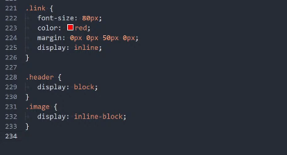

Свойства Блоков
Дополнительные задачи
4 SPANa с текстом "ПРИВЕТ". Мы выстроили их с новой строки каждый.
ПРИВЕТ
ПРИВЕТ
ПРИВЕТ
ПРИВЕТ
Мы выстроили три DIVa с текстом в ряд. Каждый див не больше чем 200px в ширину и не больше чем 200px в
высоту. Отступ от границ до контента 15px
какой-то текст какой-то текст какой-то текст какой-то текст какой-то текст какой-то текст
какой-то текст какой-то текст какой-то текст
какой-то текст какой-то текст какой-то текст какой-то текст какой-то текст какой-то текст
какой-то текст какой-то текст какой-то текст
какой-то текст какой-то текст какой-то текст какой-то текст какой-то текст какой-то текст
какой-то текст какой-то текст какой-то текст
Для ссылки с текстом ссылка, мы сделали внешний отступ вниз в 30px. При этом ссылка не шире, чем текст в
ней.
Здесь мы выстроили 4ре параграфа с тектом в ряд. Ширина каждого не больше чем 100px. Отступ между ними
30px. Отступ от границ до контента 10px
Первый параграф Первый параграф Первый параграф Первый параграф Первый параграф Первый параграф Первый
параграф Первый параграф Первый параграф Первый параграф Первый параграф
Второй параграф Второй параграф Второй параграф Второй параграф Второй параграф Второй параграф Второй
параграф Второй параграф Второй параграф Второй параграф Второй параграф
Третий параграф Третий параграф Третий параграф Третий параграф Третий параграф Третий параграф Третий
параграф Третий параграф Третий параграф Третий параграф Третий параграф
Четвёртый параграф Четвёртый параграф Четвёртый параграф Четвёртый параграф Четвёртый параграф Четвёртый
параграф Четвёртый параграф Четвёртый параграф Четвёртый параграф Четвёртый параграф Четвёртый
Есть 2ва дива с текстом. Мы нижний "насунули" на верхний. Отступ от границ до контента 30px;
Первый див Первый див с текстом Первый див с текстом Первый див с текстом Первый див с
текстом Первый див с текстом Первый див с текстом Первый див с текстом Первый див с текстом Первый див с
текстом Первый див с текстом Первый див с текстом Первый див с текстом Первый див с текстом Первый див с
текстом Первый див с текстом Первый див с текстом Первый див с текстом
с текстом Первый див с текстом Первый див с текстом Первый див с текстом Первый див с текстом Первый див с
текстом Первый див с текстом Первый див с текстом Первый див с текстом Первый див с текстом Первый див с
текстом Первый див с текстом Первый див с текстом Первый див с текстом Первый див с текстом Первый див с
текстом Первый див с текстом
Второй див с текстом Второй див с текстом Второй див с текстом Второй див с текстом Второй
див с текстом Второй див с текстом Второй див с текстом Второй див с текстом Второй див с текстом Второй див
с текстом Второй див с текстом Второй див с текстом Второй див с текстом Второй див с текстом Второй див с
текстом Второй див с текстом Второй див с текстом Второй див с текстом
Второй див с текстом Второй див с текстом Второй див с текстом Второй див с текстом Второй див с текстом
Второй див с текстом Второй див с текстом Второй див с текстом Второй див с текстом Второй див с текстом
Второй див с текстом Второй див с текстом Второй див с текстом Второй див с текстом Второй див с текстом
Второй див с текстом
Это СПАН с большим количеством текста. Мы сделали его не более 200px по высоте и в нём присутствует
вертикальный скрол.
Очень много текста Очень много текста Очень много текста Очень много текста Очень много текста Очень много
текста Очень много текста Очень много текста Очень много текста Очень много текста Очень много текста Очень
много текста Очень много текста Очень много текста Очень много текста Очень много текста Очень много текста
Очень много текста Очень много текста Очень много текста Очень много текста Очень много текста Очень много
текста Очень много текста Очень много текста Очень много текста Очень много текста Очень много текста Очень
много текста Очень много текста Очень много текста Очень много текста Очень много текста Очень много текста
Очень много текста Очень много текста Очень много текста Очень много текста Очень много текста Очень много
текста Очень много текста Очень много текста Очень много текста Очень много текста Очень много текста Очень
много текста Очень много текста Очень много текста Очень много текста Очень много текста Очень много текста
Очень много текста Очень много текста Очень много текста Очень много текста Очень много текста Очень много
текста Очень много текста Очень много текста Очень много текста Очень много текста Очень много текста Очень
много текста Очень много текста Очень много текста Очень много текста Очень много текста Очень много текста
Очень много текста Очень много текста Очень много текста Очень много текста Очень много текста Очень много
текста Очень много текста Очень много текста Очень много текста Очень много текста Очень много текста Очень
много текста Очень много текста Очень много текста Очень много текста Очень много текста Очень много текста
Очень много текста Очень много текста Очень много текста Очень много текста Очень много текста Очень много
текста Очень много текста Очень много текста Очень много текста Очень много текста Очень много текста Очень
много текста Очень много текста Очень много текста Очень много текста Очень много текста Очень много текста
Очень много текста Очень много текста Очень много текста Очень много текста Очень много текста Очень много
текста Очень много текста Очень много текста Очень много текста Очень много текста Очень много текста Очень
много текста Очень много текста Очень много текста Очень много текста Очень много текста Очень много текста
Очень много текста Очень много текста Очень много текста Очень много текста Очень много текста Очень много
текста Очень много текста Очень много текста Очень много текста Очень много текста
Задания с основного видеоурока № 5
Здесь мы разместим контент с параметрами в css:
.block {
background-color: lightblue;
color: brown;
font-size: 40px;
}
Контент с вышеуказанными параметрами без указания размера самого блока, просто во всю ширину страницы.
Внутренний отступ (padding).
Свойство не наследуется. Если мы указываем значения не в пикселях, а в процентах, то эти значения будут
высчитываться от ширины родителя элемента.
Синтаксис записи:
padding: со всех сторон; (пишется одним значением)
padding: сверху справа снизу слева;
padding: сверху_снизу справа_слева
padding: сверху справа_слева снизу
Также у каждой из сторон есть своё свойство:
padding: top;
padding: right;
padding: bottom;
padding: left;
Внутренний отступ, указанный одним значением padding: 40px;
Здесь общий отступ, заданный одним параметром отступа в css с параметрами контента
.block_2 {
background-color: greenyellow;
color: darkslategray;
font-size: 40px;
padding: 40px;
}
Внутренний отступ, указанный четырьмя значениями: верх право низ лево
Внутренние отступы каждой из сторон padding: 10px 120px 50px 0px; Здесь отступы указаны в
css
каждой из сторон, с параметрами контента
.block_3 {
background-color: greenyellow;
color: darkslategray;
font-size: 40px;
padding: 10px 120px 50px 0px;
}
Внутренний отступ, указанный двумя значениями верх_низ право_лево
Внутренние отступы, указанные двумя значениями ; Здесь отступы указаны в css
каждой из сторон, с параметрами контента
.block_4 {
background-color: greenyellow;
color: darkslategray;
font-size: 20px;
padding: 40px 100px;
}
Внутренний отступ, указанный двумя значениями верх право_лево низ
Внутренние отступы, указанные тремя значениями ; Здесь отступы указаны в css
каждой из сторон, с параметрами контента
.block_5 {
background-color: greenyellow;
color: darkslategray;
font-size: 50px;
padding: 40px 100px 10px;
}
Внешний отступ (margin).
Свойство не наследуется. Если мы указываем значения не в пикселях, а в процентах, то эти значения будут
высчитываться от ширины родителя элемента. Синтаксис записи его такой же, с одним отличием - значение margin
может быть отрицательным.
Синтаксис записи:
margin: со всех сторон; (пишется одним значением
margin: сверху справа снизу слева;
margin: сверху_снизу справа_слева
margin: сверху справа_слева снизу
Также у каждой из сторон есть своё свойство:
margin: top;
margin: right;
margin: bottom;
margin: left;
Отталкиваем блоки
Блок, от которого будем отталкивать следующий. В данном случае мы оттолкнули от него нижний блок
Если нам нужно этот блок оттолкнуть от верхнего, то для того, чтобы не было накладки отступов друг на друга,
или
по-другому - схлопывания, нижнее значение задаём верхнему.
Нижний блок "залез" на верхний.
А сейчас мы задали значение нижнего margin у черного блока меньше, чем значение верхнего margin у розового
блока
Розовый блок "налез" на чёрный, потому что мы задали отрицательное значение верхнему margin этого блока. При
этом
он тянет за собой всё, что снизу.
Этот коричневый блок тоже притянулся за розовым. И так же мы теперь умеем делать нижний отступ, чтобы более
логично смотрелся следующий заголовок после абзаца.
Ширина (Width)
Значение width устанавливает ширину блочных тегов. Значение не наследуется. Может обозначаться как в пикселях,
так
и в процентах.
Мы здесь задали ширину 100%, но так как у нас прибавлены в padding отступы по 80px., то общая ширина будет 100%
+
80px. И поэтому у нас здесь появляется горизонтальный скролл. Но это при установленном значении в css
*box-sizing:
content-box;.
Свойство box-sixing
Свойство box-sixing: - Применяется для изменения алгоритма расчёта ширины и высоты
элемента. Свойство наследуется.
Значение content-box; - (по умолчанию) Основывается на стандартах css, при этом
свойства width и height задают ширину и высоту контента и не включают в себя значения отступов, полей и границ.
Значение border-box; - Свойства width и height включают в себя значения полей и
границ, но не отступов (margin).
Значение padding-box; - Свойства width и height включают в себя значения полей, но
не
отступов (margin) и границ (border)
А здесь мы задали ширину блока в 300px., и поля по 20px., поэтому блок у нас стал занимать ширину в 340px. при
установленном значении в css *box-sizing: content-box;.
Здесь же, при заданной ширине блока в 300px., и поля по 20px., весь контент стал занимать ширину 300px.
Значение в
css *box-sizing: border-box; (мы его задали вначале, по умолчанию) и у нас не стали прибавляться в ширину
внутренние отступы.
Здесь мы ширину указали в процентах(10%), и она соответственно высчитывается от ширины родителя (ширины
страницы),
и еще убавили шрифт. Значение в css *box-sizing: border-box; (мы его задали вначале, по умолчанию) и у нас не
стали прибавляться в ширину внутренние отступы.
Центрирование объекта с помощью margin: auto;
Для того, чтобы центрировать объект по ширине с помощью margin: auto; нужно выполнить три условия:
1)
Объект
должен быть блочным
2) Объект должен быть ограничен по ширине и быть уже, чем родитель
3) На него
нужно
повлиять записью margin: 0px auto;
Центрирование блока с помощью margin: 0px auto 0px auto;
А здесь мы прижали объект справа записью margin: 0px 0px 0px auto;
Ограничение ширины с помощью max-width и min-width
max-width - Устанавливает максимальную ширину блочных и блочно-строчных тегов
min-width - Устанавливает минимальную ширину блочных и блочно-строчных тегов
Здесь мы ограничили максимальную ширину объекта значением max-width: 700px; Это значит, что объект не может
быть
шире 500px., но может быть уже.
Всё то же самое будет работать и с минимальными значениями ограничений, и с высотой (height). Это нам нужно для
адаптивной вёрстки, чтобы обезопасить нашу вёрстку, и чтобы ничего нигде не обрезалось и не вылезало.
Свойство overflow
Свойство overflow управляет поведением контента за пределами объекта. По умолчанию
стоит
значение visible;
visible;- (по умолчанию). Отображается всё содержимое элемента, даже за пределами
установленной высоты и ширины.
hidden - Отображается только область внутри элемента, всё остальное будет скрыто.
scroll - Всегда добавляются полосы прокрутки.
auto - Полосы прокрутки добавляются только при необходимости.
Здесь у нас появился scroll, потому что мы поставили значение overflow: auto; потому что у нас много много
много
много много много много много много много много много много много много много много много много много много
много
много много много много много много много много много много много много много много много много много много
много
много много много много много много много много много много много много много текста.
Картинка
Все вышеперечисленные объекты влияют на блочные элементы, а на строчные не влияют, или практически не влияют.
Только отступы по-другому работают для строчных объектов. Картинка же - это блочно-строчный элемент, поэтому
все
вышеперечисленные свойства влияют на изменения картинки.
Я ссылка
Свойство display
display - Многоцелевое свойство, которое определяет, как элемент должен быть показан
в
документе. Свойство не наследуется.
inline - (значение по умолчанию для строчных тегов) Элемент отображается как
встроенный. Использование блочных тегов, таких как div и p, автоматически создаёт перенос и показывает
содержимое
этих тегов с новой строки. Значение inline отменяет эту особенность, поэтому содержимое блочных элементов
начинается с того места, где окончился предыдущий элемент.
block - (значение по умолчанию для блочных тегов) Элемент показывается как блочный.
Применение этого значения для встроенных элементов, например тега span, заставляет его вести себя подобно
блокам -
происходит перенос строк в начале и в конце содержимого.
inline-block - (значение по умолчанию для картинки) Это значение генерирует блочный
элемент, который обтекается другими элементами веб-страницы подобно встроенному элементу. Фактически такой
элемент
по своему действию похож на встраиваемые элементы (вроде тега img). При этом его внутренняя часть форматируется
как блочный элемент, а сам элемент - как встроенный.
none - Временно удаляет элемент из документа. Занимаемое им место не резервируется,
и
веб-страница формируется так, словно элемента и не было.
